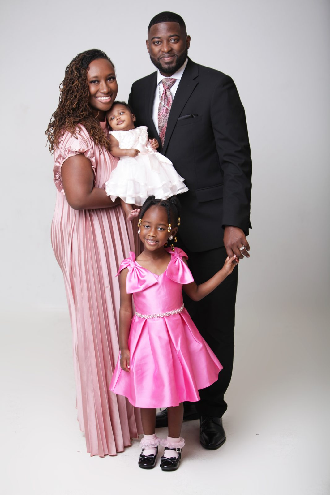
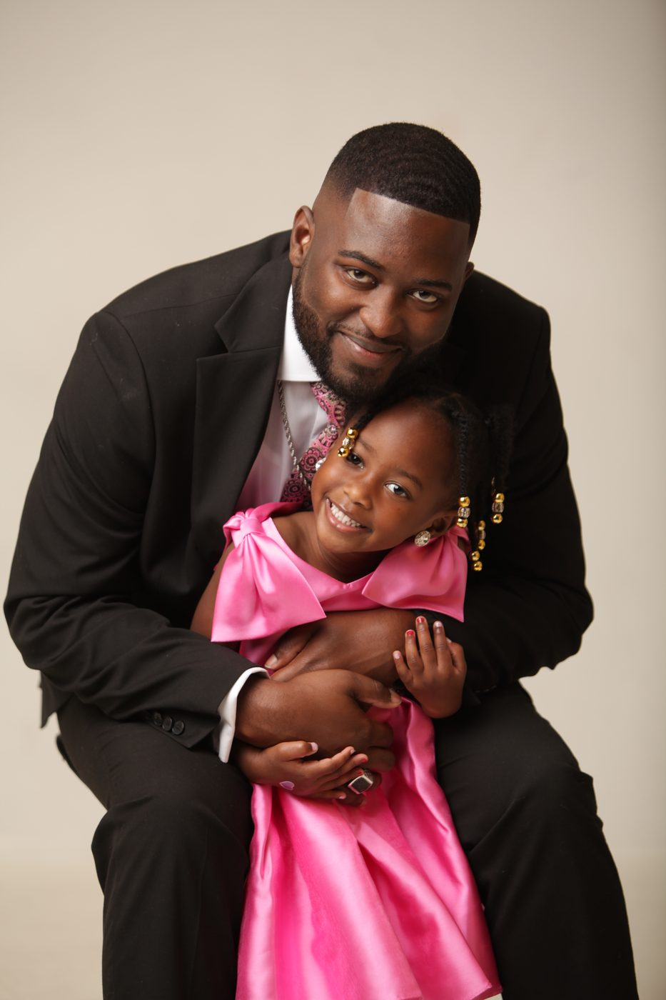

01 · Spirit
Spiritual Formation and Discipleship
Helping believers grow in their relationship with God through biblical teaching, prayer, worship, and discipleship that produces lasting transformation.
The story of Mt. Moriah is older than any one chapter. It belongs to the people who built this house, to the people who keep walking through its doors, and to the work still ahead.
Mt. Moriah First Missionary Baptist Church has stood in Quincy, Florida for generations. It was built by families who wanted a place of their own to worship, and it has been kept by the generations that followed them. The pews, the pulpit, and the walls of this sanctuary hold the memory of that work.
Under Pastor Stephen L.M. Caldwell, we are stepping into the next chapter of that story. The same faith that built this house is the faith that carries it forward.
Pastor Stephen L.M. Caldwell is a devoted servant-leader whose ministry and professional life reflect a passion for spiritual growth, community development, and economic empowerment.
With a unique calling that bridges the church and the marketplace, he is committed to helping individuals, families, and communities flourish both spiritually and financially. His ministerial journey began at Miracle Temple Church of God in Christ, under the leadership of Superintendent John L. Lee, where he faithfully served from 1997 to 2015 and was licensed to preach in 2012. In 2017, he founded Empowerment Church TLH, serving as Senior Pastor through 2025 while leading a ministry centered on discipleship, leadership development, and community engagement.
He is an ordained minister and member of St. John Missionary Baptist Church, under the leadership of Rev. Delwynn G. Williams, and has been elected to serve as Senior Pastor of Mt. Moriah First Missionary Baptist Church in Quincy, Florida. His ministry is characterized by biblical preaching, visionary leadership, and a commitment to equipping believers to transform their communities through the Gospel.
We are not simply building a congregation; we are cultivating a community of believers growing together in every part of life.
Beyond the pulpit, Pastor Caldwell serves as a mortgage loan originator with Centennial Bank, helping families pursue sustainable homeownership and generational wealth, and he holds several civic and ecclesiastical leadership roles, including Founder and President of the I-Connect Coalition of Clergy.
Pastor Caldwell is the devoted husband of Lady Quierah L. Caldwell and the proud father of Taylore and Tori. He also serves as a loving father figure to LeAsia Kates and is honored to be the godfather of several children whose lives he continues to encourage through faith, mentorship, and love.


Grace is the ground. Growth is the work. Gratitude is the response. We are not simply building a congregation; we are cultivating a community of believers growing together in every part of life.
To develop people spiritually, mentally, and economically through intentional teaching, authentic relationships, compassionate outreach, and Christ-centered community.
To build a transformative community of believers where people experience grace, pursue growth, and live with gratitude: impacting families, strengthening communities, and advancing the Kingdom of God together.
We believe faith speaks to more than Sunday morning. So our ministry does, too.
Helping believers grow in their relationship with God through biblical teaching, prayer, worship, and discipleship that produces lasting transformation.
Promoting emotional, mental, and spiritual wellness through counseling referrals, education, support, resources, and care for the whole person: mind, body, and spirit.
Equipping individuals and families with skills, resources, and opportunities to build wealth, create jobs, and strengthen the communities we serve.
Empowering people to manage their finances wisely through education, stewardship, budgeting, and pathways to long-term financial freedom.
We would love to meet you in person. Sundays at eleven.